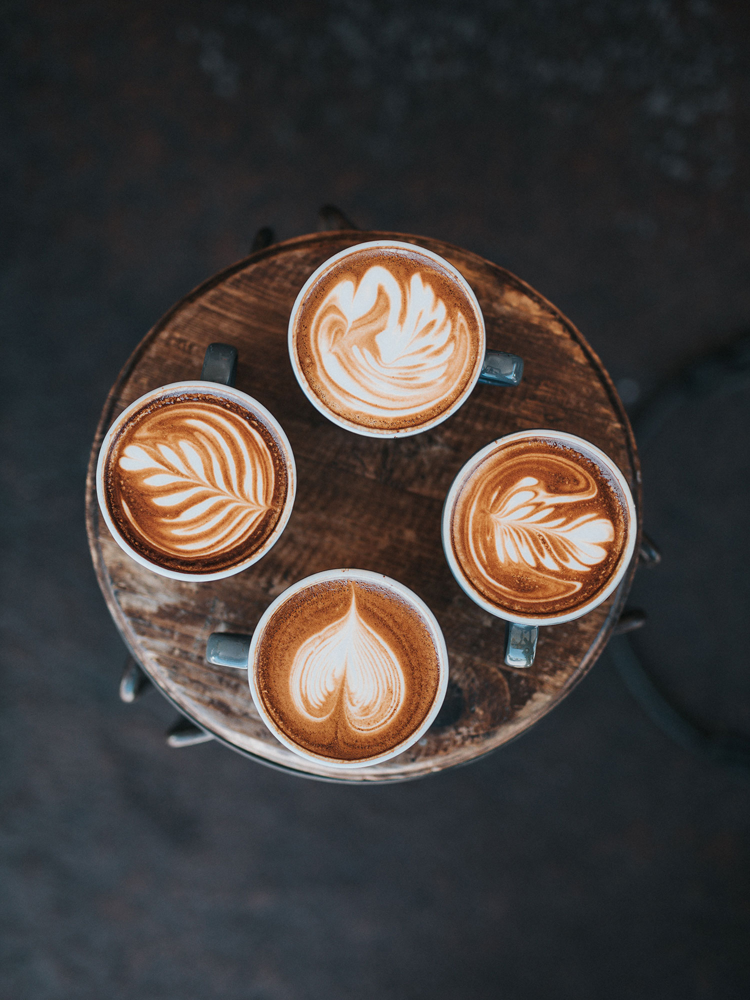

Kaffee aus Kiel, direkt gehandelt und geröstet in der eigenen Rösterei, serviert im gemütlichen Café in der Innenstadt.
Komm uns besuchen!
Fraunhoferstr. 13, Kiel
Mo – Fr 8–18 Uhr
Sa 11–18 Uhr
Als es die ersten Hügel des Kursivgebirges erklommen hatte, warf es einen letzten Blick zurück auf die Skyline seiner Heimatstadt Buchstabhausen, die Headline von Alphabetdorf. Wehmütig lief ihm eine rhetorische Frage über die Wange, dann setzte es seinen Weg fort. Unterwegs traf es eine Copy. Die Copy warnte das Blindtextchen, da, wo sie herkäme wäre sie zigmal umgeschrieben worden und alles, was von ihrem Ursprung noch übrig wäre, sei das Wort "und" und das Blindtextchen solle umkehren und wieder in sein eigenes, sicheres Land zurückkehren.